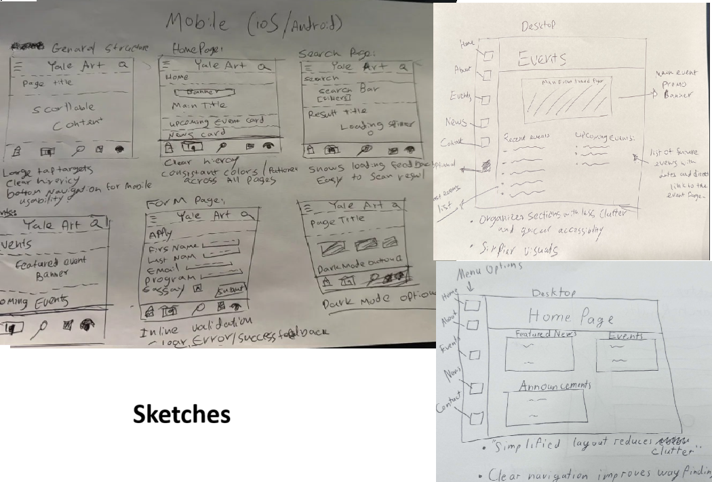
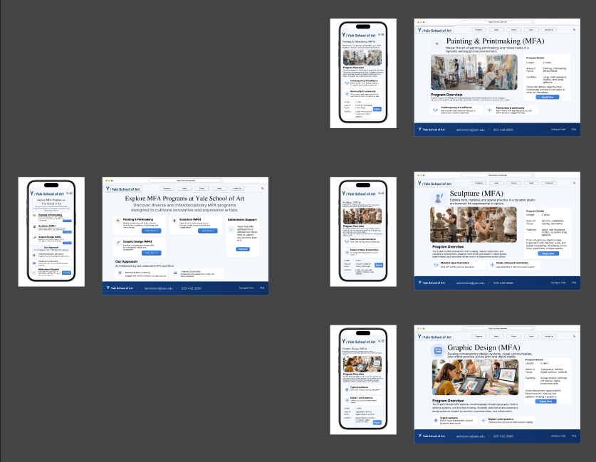
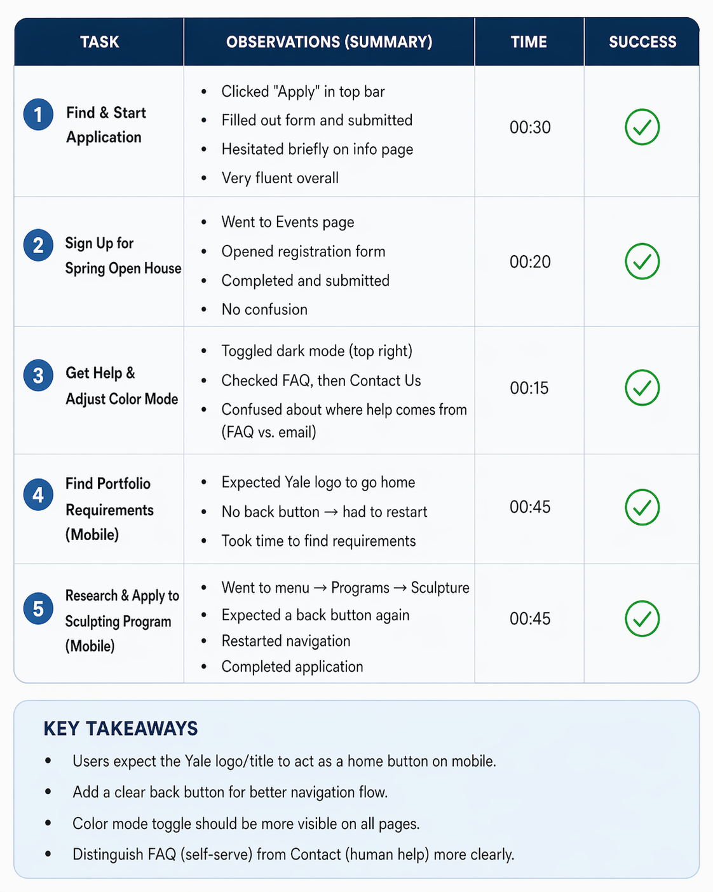

Projects
Case Study: Yale School of Art Website Redesign
This project documents how I redesigned the Yale School of Art website from early critique through wireframes, prototype testing, revision, and the final outcome. The goal was not just to make the site look better, but to make key tasks easier for first-time visitors: understanding what the site is for, finding where to apply, getting help, and navigating the experience on mobile.
1. Problem Statement
The original experience felt visually crowded and hard to scan. In early critique and peer testing, users often described the site as feeling more like an events platform than a university admissions site, which meant the homepage hierarchy was not clearly communicating purpose.
Beyond clarity, several core actions needed to be easier: finding the Apply page, recognizing help paths, understanding content categories, and moving through the interface comfortably on mobile. My redesign goal was to create a clearer, more structured admissions experience while still keeping the site visually distinctive.
User problem
First-time visitors struggled to tell whether the site was for admissions, events, or general school information.
Usability gap
Navigation hierarchy, help pathways, and some labels created hesitation during task completion.
Design goal
Prioritize task clarity, reduce cognitive load, and make the desktop and mobile flows feel more consistent.
2. Critique and Analysis
I started by studying the original Yale School of Art website’s layout, typography, content grouping, and navigation. The strongest issue was hierarchy: too many competing elements shared similar visual weight, which made it harder for users to understand where to start and what mattered most.
- Weak visual hierarchy made the homepage harder to scan quickly
- Events received too much visual attention compared to admissions tasks
- Navigation categories felt broad or overloaded for first-time users
- Mobile interactions needed clearer wayfinding and larger touch targets

Original website review. I used this screenshot to analyze hierarchy, density, and how the page emphasized creative content without making the admissions path obvious enough for new visitors.
3. Redesign Process
I moved through the redesign in stages so every major visual change had a reason behind it. I began with rough sketches, translated those ideas into wireframes, then refined the system into a higher-fidelity prototype that could be tested.
Sketching the structure
I explored multiple ways to simplify navigation, reduce visual competition, and make high-priority actions like Apply and Programs easier to spot.
Building low-fidelity wireframes
I translated the strongest sketch ideas into cleaner wireframes to test spacing, page flow, button placement, and mobile layout decisions before polishing visuals.
Creating the interactive prototype
I refined typography, layout rhythm, and interaction flow so users could move through admissions, events, help, and program information with less friction.

Early concept sketches. These helped me test layout directions quickly and identify where navigation and page hierarchy could be simplified before moving into wireframes.

Low-fidelity wireframe. This stage focused on structure, content grouping, and placement of primary actions rather than color or branding details.

High-fidelity prototype. Here I translated the structural decisions into a more polished interface that could be tested for desktop and mobile usability.
4. Key Design Decisions
Peer critique showed that users often interpreted the design as an event platform instead of a university admissions site, struggled with overloaded navigation, and wanted clearer mobile interactions. Those patterns directly shaped the redesign.
Purpose felt unclear
The homepage gave too much attention to events and broad content, so several testers described it as looking like Canvas or an event planner.
Admissions became the primary message
I re-centered the homepage around applying, program discovery, and requirements so the site communicated university identity faster and with less ambiguity.
Navigation felt overloaded
Too many competing categories and unclear hierarchy increased cognitive load and made users work harder to find their next step.
Navigation became more intentional
I simplified information architecture, prioritized key tasks, and organized labels more clearly so users could scan faster and move with more confidence.
Mobile interactions felt cramped
Some participants said targets felt small or inconsistent, especially when trying to navigate back or distinguish similar requirement labels.
Mobile flow was easier to use
I increased emphasis on accessible navigation patterns, clearer labels, and spacing choices that better supported touch interaction on smaller screens.
5. Testing and What Changed
I used both peer usability testing and prototype testing to evaluate whether people could complete core tasks without explanation. Across testing rounds, I focused on application flow, help-seeking behavior, dark mode discoverability, and mobile navigation.
Peer critique participants
Early peer feedback helped reveal bigger conceptual problems, especially that the site looked too much like an events platform instead of a university admissions site.
Wireframe testers
Think-aloud testing on the wireframes showed that most tasks were completable, but two repeated issues stood out: the color mode toggle lacked visibility and the Apply path was not instantly obvious for every user.
Prototype testers
Prototype testing showed stronger overall flow, but it exposed remaining friction around back navigation, clickable branding, help organization, and mobile consistency.
Specific testing evidence
In wireframe testing, 2 of 4 users had difficulty noticing the color mode control. One paused for several seconds and another said the button blended into the header, so I moved it out of the header to improve contrast and discoverability.
Another repeated issue
1 of 4 wireframe testers tried clicking homepage content before finding Apply. To reduce hesitation around the primary task, I moved Apply to the top of the sidebar so it would be the first navigation item users scanned.
Prototype evidence
In the prototype round, 2 of 3 mobile testers tried using the Yale title or image as a home button, and 1 tester restarted navigation because no back path felt obvious. That led me to prioritize clearer return-home behavior and stronger mobile wayfinding.
Color mode discoverability
What happened: users could complete the task, but the icon blended into the header.
Change made: I repositioned the toggle so it no longer competed with the title area.
Why it mattered: the control became easier to notice without changing the wireframe color system.
Apply path visibility
What happened: one tester searched the homepage before seeing the Apply button.
Change made: I moved Apply to the top of the left-side navigation.
Why it mattered: the site’s highest-priority user task became more visible immediately.
Help path confusion
What happened: one prototype tester hesitated between FAQ and Contact, and another re-entered the application instead of asking for help.
Change made: I clarified help pathways by separating quick answers from direct support.
Why it mattered: users could better tell where to go when they were stuck.
Mobile return-home behavior
What happened: multiple mobile testers expected the Yale title or image to return them home, and the missing back path created friction.
Change made: I prioritized clearer back navigation and branding that matches familiar web patterns.
Why it mattered: navigation felt more predictable on smaller screens.

6. Final Product
The final redesign presents a cleaner, more navigable version of the Yale School of Art website. Compared to the original, it gives admissions-related actions more visual priority, reduces hierarchy problems, and creates a more consistent desktop-to-mobile experience.
More importantly, the final result is grounded in evidence. Instead of redesigning purely by taste, I used critique and user testing to identify what people found confusing, then made focused revisions tied to those observations.
Final prototype walkthrough. This video shows the redesigned experience after iteration, including clearer structure, stronger task prioritization, and a more polished responsive flow.